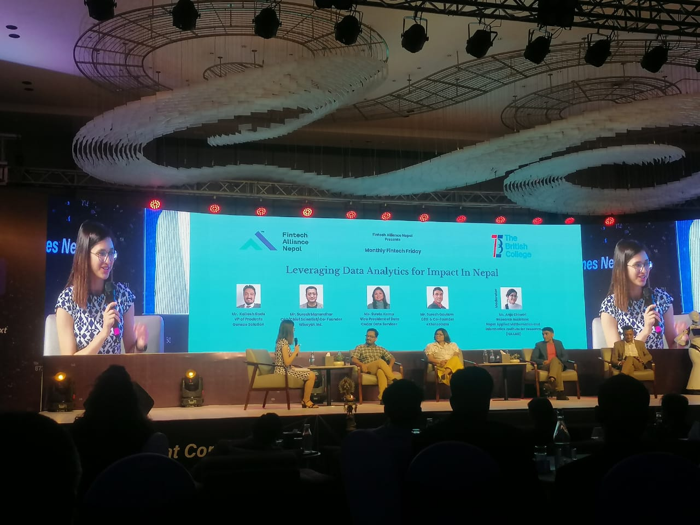
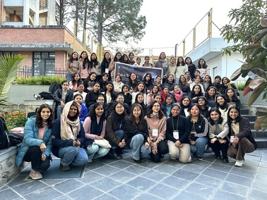
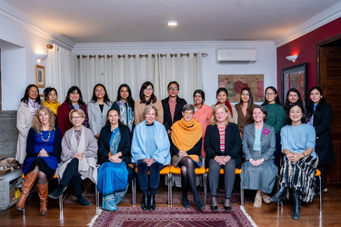
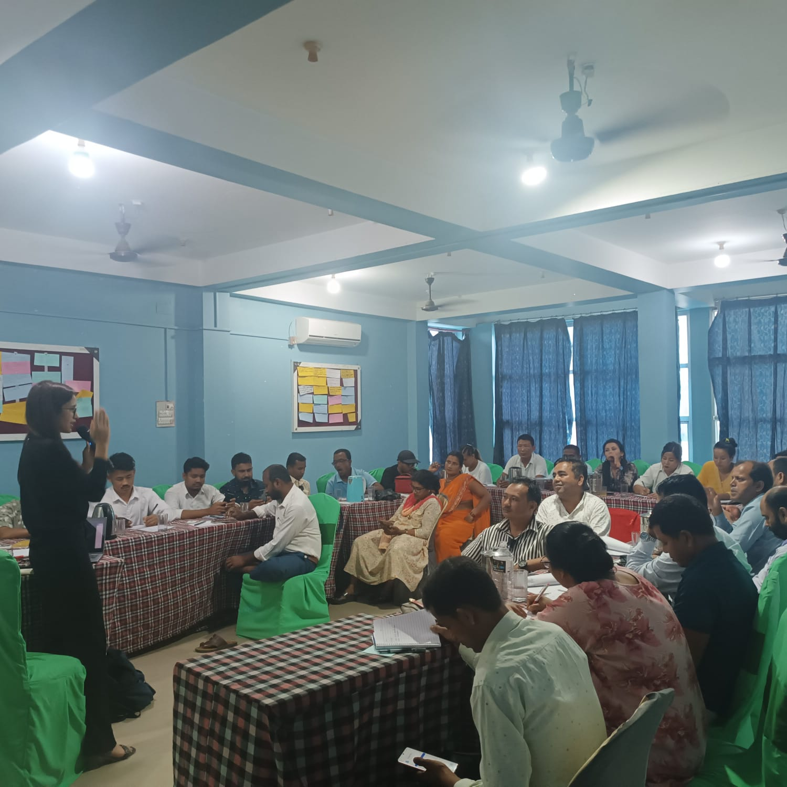

* Moderator, ùêÖùê¢ùêßùê≠ùêûùêúùê° ùêÄùê•ùê•ùê¢ùêöùêßùêúùêû ùêçùêûùê©ùêöùê•

I had the privilege of serving as the moderator for a panel discussion on “Leveraging Data Analytics for Impact in Nepal”, organized by the Fintech Alliance Nepal.
The discussion centered on how data analytics is transforming decision-making, accelerating innovation, and strengthening Nepal’s digital infrastructure.
We were joined by an incredible lineup of panelists: Mr. Kailash Badu (Vice President of Products, Genese Solution), Dr. Suresh Manandhar (CEO, Chief Scientist, and Co-founder, Wiseyak), Ms. Sweta Karna (Vice President of Data, Cedar Gate Services), and Mr. Suresh Gautam (CEO and Co-founder, eXtenso Data).
Given the diverse expertise of the panelists, I structured the session with one-to-one questions covering topics such as startups, global best practices, government policies, data privacy, and more.
This was my first experience moderating an event. Admittedly, I felt a wave of stage stress at first—questioning why I had put myself in that situation. But as the discussion unfolded, it turned into an incredibly rewarding experience that answered that very question.
* Instructor, Girls to Code
I had the wonderful opportunity to serve as an instructor for a workshop on the fundamentals of Machine Learning for undergraduate female students. The event aimed to empower more women to pursue careers in the field of machine learning. It hosted around 50 participants from nearly 10 different institutions across Nepal and was organized by the LOCUS 2025 team. We were two instructors for the workshop, where I served as an instructor covering exploratory data analysis (both theoretical and practical), the fundamentals of Neural Networks, Convolutional Neural Networks, and AI ethics. I volunteered for this session to inspire young women to pursue research, especially in Nepal, where even in our institution, considered the leading AI research institute in the country, there are only two female research assistants.
* Mentee, Women Leaders Mentorship Programme
I am currently participating in the eight-month-long Women Leaders Mentorship Programme organized by the European Union (EU) in Nepal. I joined the program to gain fresh and broader perspectives on both local and global issues and to learn how experienced leaders address them. I am being mentored by Her Excellency Veronique Lorenzo, the EU Ambassador to Nepal. Through this program, I have joined a community of 13 women from various professional fields and regions of Nepal. Together, we aim to address local challenges through interdisciplinary collaboration.
* AI Facilitator at Right to Information Training Camp for Nepali Journalists
I served as an AI facilitator at the provincial-level training camp, Right to Information Training Camp, held in Janakpur and Siraha. This program was organized by Sancharika Samuha in collaboration with the National Information Commission and supported by The Asia Foundation/USAID Nepal. The primary goal of the program was to enhance digital literacy among Nepali journalists. The event brought together 50 journalists from six districts in the Madhesh Province, organized at two different districts, with nearly equal representation of both male and female participants.
During the training, I facilitated the AI sessions, providing foundational knowledge of AI and demonstrating how journalists in Nepal can leverage this technology to improve their productivity. This included hands-on training with tools like ChatGPT, DALL·E, and Claude, as well as instruction on AI safety practices. Participants seemed to be highly interested in using ChatGPT's voice control in Nepali language and the image generation process. This experience not only revealed the significant digital divide in Nepal but also highlighted the eagerness of local journalists to adapt to new technologies despite infrastructure challenges.
* Alumni Speech at Robotics Club

I had the honor of being invited to deliver an alumni speech at the orientation program of the Robotics Club at Pulchowk Campus. I was an active member of the Robotics Club from my freshman year through my junior year. This event was primarily aimed at freshmen, where I was asked to share my personal experiences, insights, and advice as a former member.
During my speech, I focused on how my involvement with the Robotics Club enriched my undergraduate journey. I offered guidance on how new students can maximize their time and opportunities within the club, drawing from my personal experiences and the skills I gained over the years. Additionally, I had the opportunity to engage in one-on-one interactions with freshmen and connect with them on a more personal level.
* Academic Paper Reading Session
I had the opportunity of being the session leader for the first paper reading event hosted by IEEE at Pulchowk Campus. The session itself was designed with two main focuses. Firstly, we delved into the techniques and tips for effectively reading a research paper. This part aimed to equip participants with the skills needed to navigate through scholarly articles.
Secondly, we dedicated a portion of the session to a thorough discussion of a specific paper titled 'Raising the Cost of Malicious AI-Powered Image Editing'. This involved analyzing and talking about the content, findings, and implications of the paper. Overall, it was an opportunity to foster a deeper understanding of both the general approach to reading academic papers and the specific insights provided by the chosen paper on AI-powered image editing
* Children in Technology (CiT), 2023

Our team of 13 students visited the eastern-most part of Nepal with the aim of raising awareness on essential subjects such as hardware, software, and crucial topics like internet safety and cybercrime. It was an initiative to address the technology gap faced by rural students. During our visit, we covered two states, Koshi and Madesh Pradesh, spanning across five districts: Dharan, Biratnagar, Itahari, Inaruwa, and Janakpur, where we engaged with a total of 13 schools.
We had the opportunity to meet hundreds of students and we were truly captivated by their eagerness to learn and their excitement upon discovering new technologies. However, the disparity in knowledge due to factors such as geographical placement, culture, and economic conditions was also an eye-opening experience. This effort was a sincere attempt to contribute to and uplift our community.
* Robocamp

I was an instructor at a four-day Robocamp, organized by the Robotics Club, Pulchowk Campus. This workshop covered a wide range of topics, from basic electronic components like transistors to more advanced concepts involving microcontrollers. The goal of Robocamp was to provide an introductory session that combined both theoretical knowledge and practical application. The students were primarily freshmen and sophomores, numbered 40 in total, eager to dive into the world of robotics.
Throughout the workshop, we engaged in hands-on projects that allowed students to apply what they had learned in real-time. The camp included activities ranging from LED blinking on a breadboard to exploring the incredible capabilities of the Raspberry Pi Pico (RP2040). We also worked with sensors like the MPU-6050 and ultrasonic sensors. One of the highlights was guiding the participants in designing and building a self-balancing robot.
* Summer STEM Initiative
During the summer break of 2022, my friends from the Robotics Club and I organized a four-day robotics training camp at Milestone School. This camp was designed for elementary school students and aimed to encourage participation in robotics and STEM from a young age. It was more of an awareness program, intended to spark interest and curiosity in these fields among young students.
The camp was conducted at a school where students came from low-income families. Our goal was to provide these students with exposure to robotics and technology, which they might not have had access to otherwise. The sessions began with simple explanations of fundamental concepts. For instance, we described what V=IR means by giving an analogy of a ball rolling down a hill, making it easier for the young students to grasp. We also engaged them in hands-on projects, such as making a buzzer that buzzes when the water level rises, demonstrated using small water cups.This initiative was a small step towards bridging the gap in STEM education for underprivileged children and promoting inclusivity in these fields.